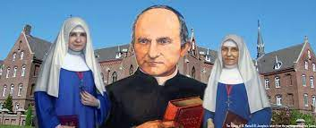

Ideario de los Colegios de las Misioneras Siervas del Espíritu Santo en Argentina

Referencia Histórica
"Respondiendo a la llamada del Espiritu Santo y a las necesidades de los pueblos, San Arnoldo Janssen, con la colaboración de Madre Maria Helena Stollenberg, y de Madre Josefa Hendrina Sterrmanns, fundó nuestra Congregación como comunidad misionera, consagrándola al Espiritu Santo, Cristo nos llamó a llevar a los hombres a la plenitud de la vida".
Nuestro Nombre:
"Nuestro objetivo primordial es el servicio de la proclamación de la Buena Nueva, por ello nos llamamos Misioneras Siervas del Espiritu Santo a quien nos consagramos totalmente, "dispuestas a dejarnos guia por Él y discerniendo sus movimientos en el mundo de hoy."
1. Espiritualidad:
El centro de nuestra espiritualidad se expresa en el lema: "viva Dios Uno y Trino en nuestros corazones y en los corazones de todos los hombres", porque "Dios Uno y Trino es el origen, el modelo y la plenitud de toda comunidad".
Dios es reciprocidad, es donación, es cordialidad, es comunicación, es encuentro.
El Espiritu Santo es el amor mutuo entre el Padre y el Hijo, vida divina de la que participamos por nuestro bautismo. Nuestra Congregación se caracteriza por una consagración especial al Espíritu Santo.Es imprescindible profundizar la confianza en aquel que anima a la iglesia e impulsa toda acción misionera", ya que él es el protagonista de toda misión.
Su impulso vivificador encarnó el Verbo en María Santisima. Él sigue engendrando nuevos hijos en el seno de la Iglesia.
Veneramos a Maria en su triple relación con la Santisima Trinidad como Hija del Padre, Madre del Hijo y Esposa Inmaculada del Espiritu Santo.
2. Carisma Misionero
El carisma fundamental de la Congregación es la Evangelización de los pueblos: "Nuestro objetivo primordial es el servicio de la proclamación de la Buena Nueva, de acuerdo a la voluntad de nuestro Fundador quien, abierto a las situaciones de su tiempo, vio la necesidad de nuestra presencia femenina en aquellos lugares de la misión, donde hubiera necesidad de un servicio de caridad cristiana, educación y asistencia espiritual".
La evangelización de todos los hombres era a tal punto el gran móvil de la vida de Arnoldo Janssen, que lo llevó a decir que el anuncio del Evangelio es la obra más grande de amor al prójimo. Juan Pablo II refuerza esta convicción cuando dice: "El impulso misionero pertenece a la naturaleza Intima de la vida cristiana".
Como Comunidad Internacional compartimos valores y riquezas culturales de distintas razas y naciones, descubriendo así la "semilla del Verbo esparcida en cada una de ellas, testimoniando asi al mundo que la fraternidad y la paz son posibles.
Queremos "revalorar, promover y evangelizar la Cultura Nacional rescatando el ser argentino en sus raíces cristianas, acervo común que nos indica que nuestros hermanos latinoamericanos". Además, recordamos con Pablo VI que la evangelización de la cultura es alcanzar y transformar con la fuerza del Evangelio los criterios de juicio, los valores determinantes, los puntos de interés, las líneas de pensamiento, las fuentes inspiradoras y los modelos de vida de la humanidad."
3. Misión en nuestros colegios:
Evangelizar:
Siendo el fin de nuestra Congregación el anuncio de la Buena Nueva la razón de ser de nuestros Colegios no puede ser otro que la de evangelizar. "Quienes acogen con sinceridad la Buena Nueva, mediante tal acogida y la participación en la fe, se reúnen pues en el nombre de Jesús para buscar justos el Reino, construido, vivirlo. Ellos constituyen una comunidad que es a la vez evangelizadora".
La acción evangelizadora se dirigirá a toda la comunidad educativa, a su vez se transformará en agente de evangelización.
Esta acción evangelizadora implica:
- Conformar, con la participación de todos los estamentos, una verdadera comunidad educativa que refleje la vida trinitaria.
- Ahondar en la fe en Jesucristo, Dios y Hombre, crucificado y resucitado.
- Alimentarnos constantemente de la Palabra de Dios.
- Penetrar en las profundidades de la presencia de Dios Uno y Trino mediante la vida sacramental y la oración.
- Ser dóciles al Espíritu Santo, inspirador de toda acción evangelizadora.
- Cultivar el sentido de pertenencia a la Iglesia universal.
- Animar el fervor misionero en cuanto a la preocupación por la Iglesia local como asimismo la misión Ad Gentes.
- Acrecentar el amor a todos los hombres, de modo especial a aquellos que aún no conocen a Cristo o lo conocen de manera insuficiente, a los pobres, a los que sufren injusticias y a los marginados.
- Respetar la conciencia y la libertad de cada persona.
- Lograr la síntesis entre fe y ciencia y fe y vida.
- Formar lideres laicos.
- Promover a la mujer y la familia.
- Promover la justicia, la paz y la defensa de la vida.
María, Madre educadora de la fe, "cuida de que el Evangelio nos penetre, conforme nuestra vida diaria y produzca frutos de sanidad. Ella tiene que ser, cada vez más, la pedagoga del Evangelio en América Latina.
Evangelizar Educando
La iglesia siempre sabía que educar cristianamente es evangelizar, "ha amado a sus escuelas... no ha cesado de sostenerlas en las dificultades de todo género y de defenderlas frente a gobiernos inclinados a abolirlas o a apropiarse de ellos".
San Arnoldo Janssen vio en la educación una manera excelente de evangelizar. Por eso asignó a sus hijas la educación como una de las tres maneras principales de apostolado femenino, junto con el ejercicio de la caridad y la asistencia espiritual.
Educar
Nuestra tarea educativa debe dirigirse al hombre como persona: libre, única e irrepetible, que recibe su dignidad por haber sido creada a imagen y semejanza de Dios y redimida por Cristo. "Habremos de presentar la fe en Cristo como una realidad de humanización. De ahí que, evangelizar en nuestras escuelas signifique siempre educar.
Trataremos de formar actitudes humanas personalizantes que desarrollen a sus hijos. De acuerdo con nuestro carisma tendremos en cuenta de manera especial la potencialidad de los dones que el Creador ha dispensado.
- La actitud de diálogo que capacita a una convivencia fraterna y a relaciones interpersonales fecundas.
- El sentido de responsabilidad como condición indispensable del ejercicio de la libertad.
- El trabajo como expresión de la creatividad, y por lo tanto como actividad humana plenificante.
- El juicio crítico para discernir los valores evangélicos entre tantos antivalores del mundo contemporáneo.
- La aceptación de sí mismo y autodisciplina para lograr la auténtica liberación.
- La sencillez en el estilo de vida.
- El espíritu de servicio y de solidaridad.
Todo ello trataremos de vivirlo en un clima de respeto, alegría, libertad y amor.
Seremos testigos de la buena nueva de la esperanza porque Jesús es la vida y su espíritu nos vivifica.
Funciones del Centro Educativo.
Siendo los padres los primeros educadores de sus hijos, el centro educativo es considerado como complemento de la familia y no como un sustituto. Por lo tanto, la función prioritaria de la escuela está en proporcionar a todos los jóvenes la posibilidad de adquirir conocimientos y capacidades que se integrarán en su modo personal de concebir la vida para cumplir responsablemente sus distintas funciones como:
- Profesionales maduros en el trabajo
- Ciudadanos responsables
- Buenos miembros de familia
- Amigos leales
- Fieles hijos de Dios
Educar sin conocer suficientemente al hombre, es como caminar en el desierto sin brújula... y sin meta.
Educar sin amar al hombre, que se recibe como educando, es como una condena, especialmente en los momentos de crisis del proceso educativo.
Educar sin creer en el hombre, es exponerse a sufrir la ansiedad del inmediatismo, que exige "ver" los frutos del trabajo... o la angustia desesperanzada de quien siente que siembra en el desierto.
(De Julio César Labakė: "Sugerencias para Educadores".)
Proyecto de Hombre
Según el Ideario M.S.Sp.S
1) Que nuestro egresado tenga conciencia de su interioridad, de sus dones y potencialidades y los desarrolle plenamente.
- Descubra el sentido de su vida.
- Conozca su vocación.
- Sea creativo.
- Se acepte a sí mismo como imagen y semejanza de Dios y asuma su realidad bio-psico-espiritual, familiar e histórica.
- Sepa integrar y valorar con hondo sentido transcendente el dolor, el sufrimiento, la invalidez y el fracaso.
2) Que sepa conducirse en libertad.
- Se gobierne a sí mismo.
- Tenga juicio crítico.
- Sea protagonista de su propio desarrollo humano y cristiano.
- Sea responsable de sus acciones.
3) Que sea consciente de su propia dignidad y de la dignidad de toda persona humana.
- Cuide y respete su vida y la de los demás.
- Respete y defienda la vida desde la concepción.
- Practique y defienda los derechos humanos, iluminados por el evangelio.
4) Que logre una convivencia armoniosa con sus semejantes.
- Acepte al otro como hermano.
- Practique el diálogo, la participación y la solidaridad.
- Se preocupe por la justicia social y la paz.
- Sea capaz de vivir una autentica amistad.
- Valore el matrimonio como proyección comunitaria de un amor bendecido por Dios.
- Ame la Patria y aporte al bien común.
- Se Comprometa con su realidad familiar, social y parroquial.
- Sea abierto al mundo.
- Sea Creador de comunidades.
5) Que sepa cuidar la creación y servirse de sus bienes con justicia.
- Contribuya al progreso y la ciencia y los ponga al servicio de la vida.
- Descubra la creación como obra de Dios para el hombre.
- Busque el equilibrio ecológico mediante el uso racional de los bienes.
- Cultive la capacidad de asombro frente a la maravilla de la creación.
- Haga prevalecer la ética sobre la técníca.
6) Que sea consciente del llamado a la santidad.
- Tenga consciencia de la inhabitación trinitaria a partir el bautismo.
- Se preocupe por la extensión del Reino de Dios en todo el mundo.
- Practique la fe, la esperanza y la caridad.
- Se comprometa con la Iglesia local y universal.